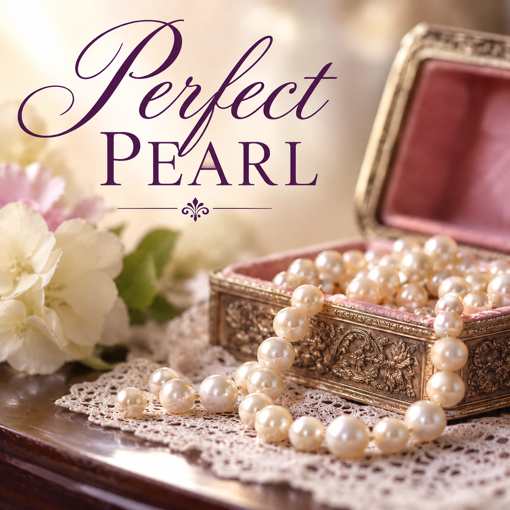

Perfect Pearl

Want to download this song? Return to the Songs page, add this song to your playlist, then open My Playlist. Select the song and choose Download Song to review the Free Use agreement.
Lyrics
Verse 1
I longed for them when I was young
Something to keep to help me feel good
Objects so precious, to which I clung
Imaginings I never understood
Chorus
I keep them on my imagined strand...
These Pearls I treasure from them
Pearls of such quality, the greatest demand
Perfect Pearls, beautiful, lustrous gems.
Verse 2
Once a teacher said I was smart.
Once a trainer enlightened the dark
One boss said, "He's working in you."
Hubby said, "I can't believe you do what you do."
Chorus
I keep them on my imagined strand...
These Pearls I treasure from them
Pearls of such quality, the greatest demand
Perfect Pearls, beautiful, lustrous gems.
Bridge
Those people won't comprehend
The Source of the words they bestowed
Til someone shares the Treasure and sends
The Source of Joy as yet untold.
Final Verse
Matthew wrote of a Pearl of great price
For which you sell everything you own
Without ever even thinking twice
That Pearl was God's own Son.
Chorus
I keep that Pearl on my imagined strand...
This Love I treasure from Him
Pearl of greatest price in the land
Perfect Pearl, I give this song to Him.
Final Chorus
I keep this Pearl in my heart and my hand...
The Pearl I love, to whom I belong
Pearl of such cost I can't understand
With His Love, help me share His song.
Devotional
Perfect Pearl — The Treasure We Receive and Share
Some gifts never come wrapped in paper. A teacher recognizes a young person’s ability. A trainer helps someone find a way through difficulty. A supervisor notices God at work. A husband expresses amazement at what his wife can do. Years later, those words are still remembered. They are like pearls: small enough to carry, yet precious enough to treasure for a lifetime.
The song, Perfect Pearl, begins with such encouragement. Its imagined strand is a place where kind words are gathered and remembered. Scripture recognizes the power of words: “A word fitly spoken is like apples of gold in pictures of silver.” (Proverbs 25:11, KJV) And “a word spoken in due season, how good is it!” (Proverbs 15:23, KJV) Encouragement can be a genuine act of love, even when the speaker never learns what those words meant.
But the song asks us to look beneath the gift. Could God have used another person’s words to strengthen us? Scripture gives us reason to recognize His care working through people, without assuming that every compliment is a direct message from Him. James writes, “Every good gift and every perfect gift is from above.” (James 1:17, KJV) Paul describes the God “who comforteth us in all our tribulation, that we may be able to comfort them which are in any trouble.” (2 Corinthians 1:4, KJV) Comfort received is not meant to stop with us.
That is the deeper turn in the bridge. The people who spoke those treasured words may not know how God used them. Yet the person encouraged can become an encourager in turn. A pearl is no less precious when its beauty is shared. Likewise, gratitude for what we have received can become a desire to tell someone else about the Lord whose grace sustains us.
The final verse turns to Jesus’ parable in Matthew 13:45–46. In the biblical text, “the kingdom of heaven is like unto a merchant man, seeking goodly pearls” who, on finding one pearl of great price, “went and sold all that he had, and bought it.” The parable speaks explicitly of the surpassing worth of the kingdom of heaven. The song poetically uses that pearl to direct our attention to Jesus Christ, through whom the kingdom is proclaimed and through whom we receive salvation. That is the song’s imagery, not a replacement for the meaning of the passage.
What makes Christ worthy of such devotion is not simply that He offers encouragement. He gave Himself for us. Scripture says, “the Son of God, who loved me, and gave himself for me.” (Galatians 2:20, KJV) And “For by grace are ye saved through faith; and that not of yourselves: it is the gift of God.” (Ephesians 2:8, KJV) We cannot purchase salvation as the merchant purchased a pearl. It is God’s gift, received through faith. The cost to Christ, and the grace extended to us, make the songwriter’s wonder understandable: “Pearl of such cost I can’t understand.”
Notice how the last chorus changes the direction of the song. The singer no longer merely keeps pearls of encouragement; she declares that she belongs to Christ. Then she turns to the listener: “With His Love, help me share His song.” It is an invitation to join in telling others about Him. Jesus commanded His followers to make disciples (Matthew 28:19–20), and Peter urged believers to be ready to give a reason for their hope, with meekness and reverence (1 Peter 3:15). We need not have grand words. Sometimes sharing begins with the same kind of simple kindness that once helped us.
Perhaps someone once said something to you that you still treasure. Thank God for that kindness. Then consider whose life you might strengthen today. The treasured words are pearls, but the Gospel of Christ is the message we are invited to carry forward. We do not share it to collect praise or increase our own strand. We share because we have been loved first. (1 John 4:19)
Prayer
Father, thank You for the words of kindness and encouragement You have allowed me to receive. Help me recognize Your grace without making the gift greater than the Giver. Keep my heart anchored in Your Word and in the salvation offered through Jesus Christ. Teach me to encourage others faithfully, to speak of Christ with humility and love, and to share the hope I have received. In Jesus’ name, Amen.
Extra Info — Scripture Map
Words of encouragement: Proverbs 25:11; Proverbs 15:23; Ephesians 4:29
God’s gifts and shared comfort: James 1:17; 2 Corinthians 1:3–4
Pearl of great price — the kingdom of heaven: Matthew 13:45–46
Christ’s love and salvation by grace: Galatians 2:20; Ephesians 2:8–9
Sharing the Gospel and our hope: Matthew 28:19–20; 1 Peter 3:15; 1 John 4:19